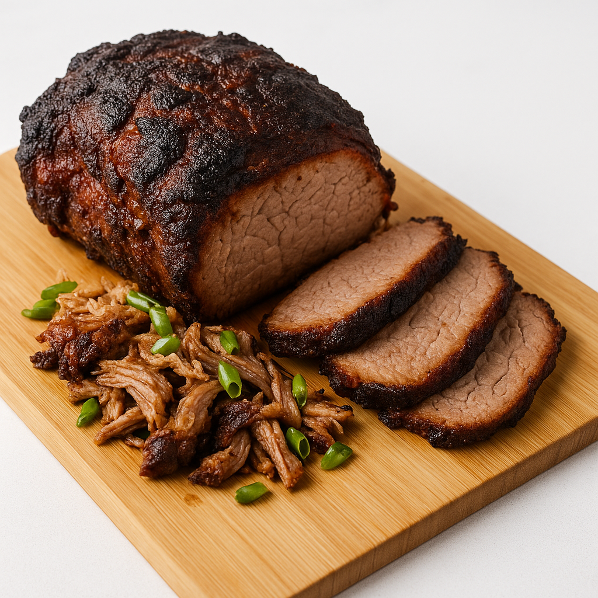

Breakfast Roast Pork (Slow Cooker, Boston Butt)

Yield: Serves 6–8
Ingredients
- 1 boneless Boston butt (3–5 pounds)
- 1 tbsp olive oil
- 2 tbsp Dijon mustard
- 1 tbsp honey
- 2 tsp dried rosemary
- 1 tsp dried sage
- 1 tsp salt
- 1/2 tsp black pepper
- 1 green onion, thinly sliced
- 1 cup chicken or vegetable broth
Instructions
- Sear the pork: Pat the pork butt dry with paper towels. Heat the olive oil in a large skillet over medium-high heat. Sear the pork on all sides until golden brown. This step is important for building a rich flavor and is worth the extra pan.
- Make the seasoning paste: While the pork is searing, mix the Dijon mustard, honey, rosemary, sage, salt, and pepper in a small bowl.
- Transfer and season: Place the seared pork butt into the slow cooker. Rub the honey-mustard mixture evenly over the top and sides of the roast.
- Add liquid: Pour the 1 cup of chicken or vegetable broth into the bottom of the slow cooker, being careful not to wash the seasoning off the pork.
- Cook on low: Cover the slow cooker with the lid and cook on the LOW setting for 8 to 10 hours, or until the pork is fork-tender. The best indicator of doneness is when the meat easily pulls apart with a fork.
- Rest and shred: Once cooked, use tongs or two large forks to transfer the pork to a cutting board. Let it rest for at least 10 minutes. This allows the meat to absorb its juices for a moister result. Shred the pork using two forks, discarding any large pieces of fat.
- Serve with gravy: For extra flavor, you can skim the fat from the juices in the slow cooker. Return the shredded pork to the pot and stir to combine it with the remaining gravy.
- Garnish: Garnish with fresh green onions and serve alongside scrambled eggs or other breakfast items.